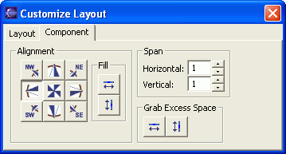

You can use the GridLayout with SWT composites to arrange components using a powerful and flexible grid arrangement.
The SWT GridLayout layout manager arranges its components, or widgets, in rows and columns. As each component is added, a new cell is added from left to right to accommodate the new component, and new rows are automatically added as necessary. For example, a Grid layout with three columns requires two rows to hold four widgets. This can become more complex because each component can bet set to span cells vertically and horizontally.
Because of its visual grid and placement indicators, the visual editor makes it easy to determine exactly where widgets will be located within the grid and in relation to other widgets.
To work with a SWT composite that is using Grid layout:
- To show the grid for Grid layout:
- In the Java Beans view or Design view, select the composite that uses Grid layout.
- Right-click and select Show Grid. A grid with red, dotted lines shows the borders of the cells in the grid.
- To change the number of columns in the grid:
- In the Design view, select the composite that uses Fill layout.
- Click the Customize Layout
 toolbar
button. The Customize Layout dialog opens.
toolbar
button. The Customize Layout dialog opens. - On the Layout notebook tab, enter a new value in the Number of columns field.
- Optional: You can force all the Grid columns to be the same width by selecting the Make columns equal width check box.
- To add or move components in Grid layout:
- Select the component from the palette that you want to add to your Grid layout, or click and drag the existing component that you want to move within your Grid layout.
- Move your mouse pointer over the position where you want to drop or move the component. As you move the cursor, a vertical bar will indicate the approximate placement of the widget if you release your mouse button.
- Click or release your mouse to drop the component in the position that you selected. In Grid layout, you can only place an item to the left or right of another item. Depending on the number of columns and whether other components span columns, the visual editor will move widgets and create rows as necessary.
- To set the alignment of a component within its cell in the grid:
- Right-click the component and select Customize Layout.
The Customize Layout dialog opens:.
 - In the Alignment section of the Component page, select one of the compass buttons to align the component. For example, if you click the NW (North-West) button, the component will be aligned in the upper left corner of the grid cell.
- Optional: To force the row or column that holds the component to grab extra space in the container, click the Fill horizontal or Fill vertical button. If multiple rows or columns are grabbing extra space, they divide up the excess space equally.
- Right-click the component and select Customize Layout.
The Customize Layout dialog opens:.
- To span a widget, or component, across grid cells, select the component
and do one of the following steps:
- Click a resize handle on the component, and drag the component across
cells until the dark grey box occupies the cells that you want to span, then
release your mouse button.

- On the Customize Layout window, enter the exact number of cells that you want the component to span. If you increase the Vertical span, the component will span to the cell below its current position. If you increase the Horizontal span, the component will span to the cell to the right of its current position.
- Click a resize handle on the component, and drag the component across
cells until the dark grey box occupies the cells that you want to span, then
release your mouse button.